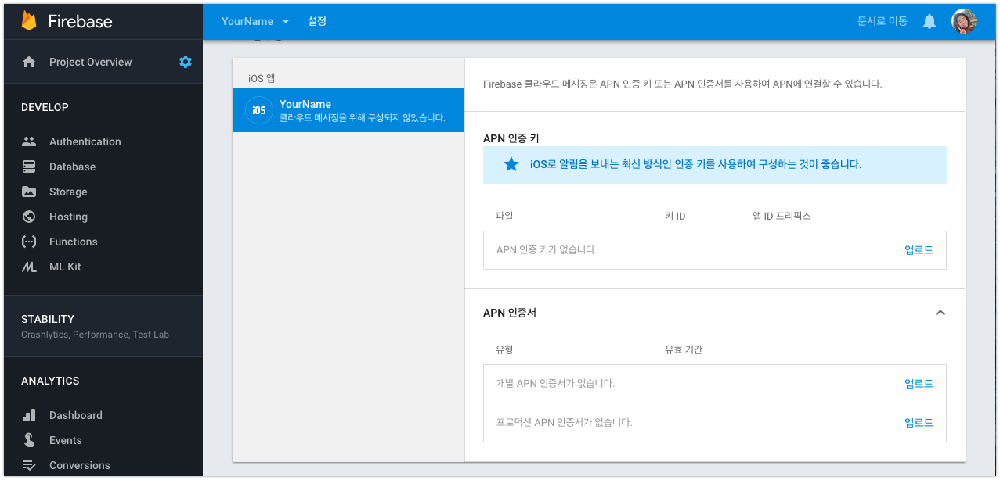
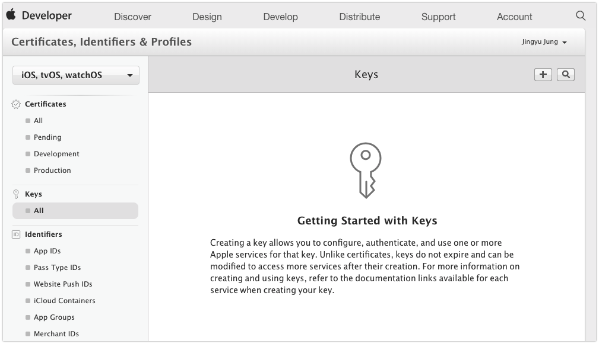
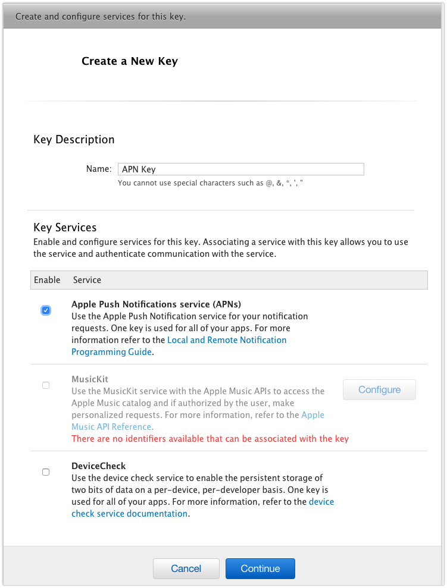
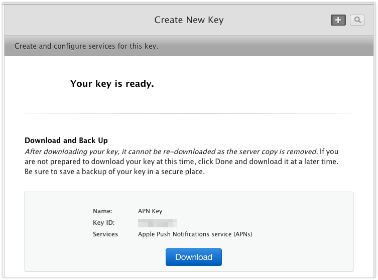
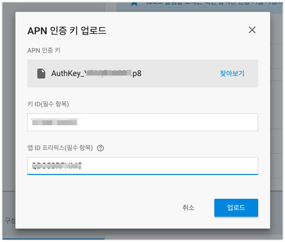
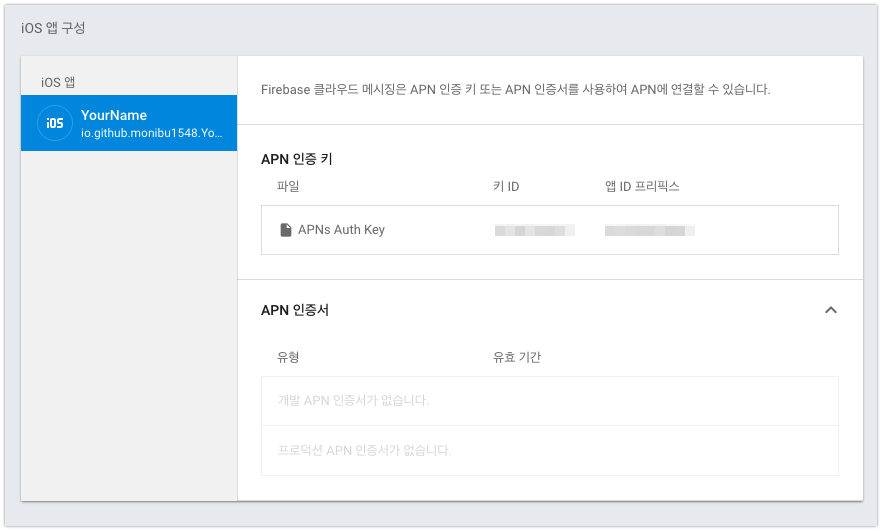
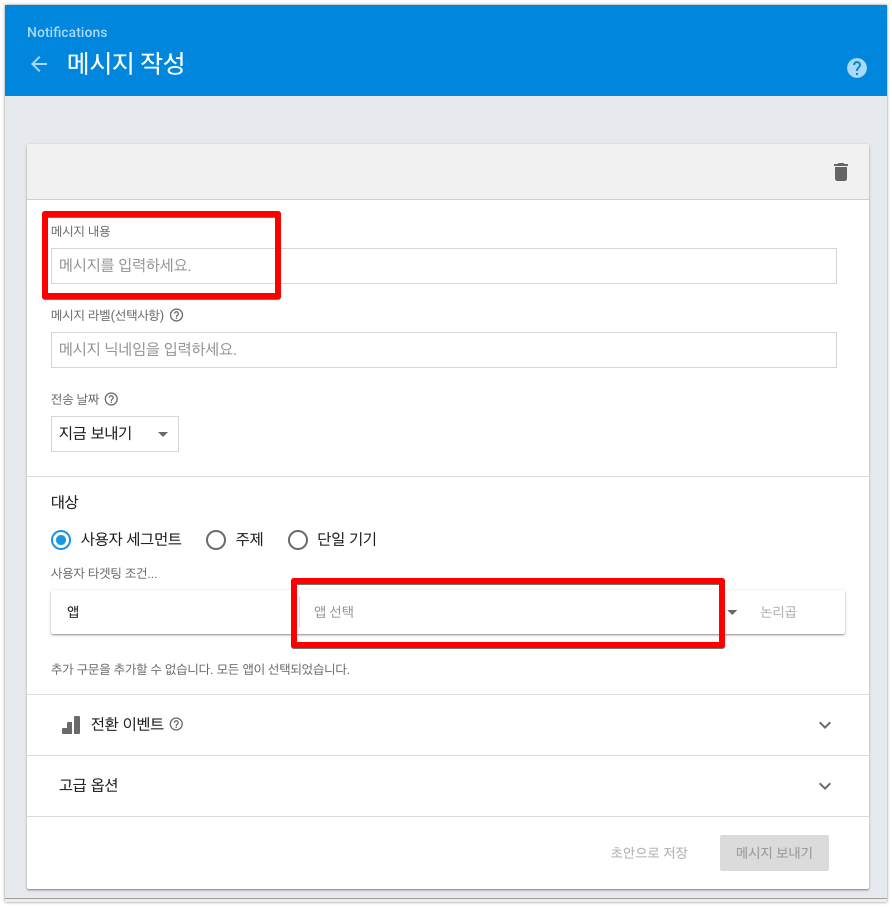

Firebase Cloud Messaging, Notification (Firebase를 이용한 iOS Push 전송)
-읽음
Firebase Cloud Messaging
지난 포스팅에서는 iOS 앱의 Push Notification 기능을 추가하는 내용을 다뤘습니다.
iOS APN, Push Noticifation tutorial (Push 인증서 발급, 테스트 과정)
이제 이 기능을 실제 서비스에서 사용하기 위해 Firebase 를 사용하는 방법을 소개합니다.
1 | pod 'Firebase/Core' |
Podfile에 Cloud Messaging 기능을 사용하기 위해 위 2pod을 설치합니다.
1 | pod install |

Firebase 앱 설정에서 APN 키를 등록해야합니다.
지난 포스팅에서는 Push 인증서를 만든것이고 APN 인증키는 따로있습니다.
APN 인증키 발급받기

애플 개발자센터에 들어갑니다.

Key 이름은 적당히 적고 APNs 선택 후 Continue~!

쨘! APN Key가 쉽게 생성됩니다. 여기서 .p8 APN 인증서를 다운받습니다. 잘 챙겨주세요!
자 이제 다시 Firebase로 돌아옵니다.

다운받은 APN 인증키를 넣고
키 ID 는 인증키 파일 뒤 suffix입니다.
앱 ID prefix는 teamID 입니다.

APN Key가 정상적으로 등록된 것을 볼 수 있습니다.
XCode 에서 Firebase Push 사용할 수 있도록 설정하기
AppDelegate에서 Firebase 설정하기
Appdelegate.swift 파일에 Firebase 모듈을 import 합니다
1 | import Firebase |
application:didFinishLaunchingWithOptions: 메소드에서 Firebase 모듈을 초기화합니다.1
FirebaseApp.configure()
Push Notification을 등록할 위치에 다음 코드를 삽입합니다1
2
3
4
5
6
7
8
9
10
11
12
13
14
15if #available(iOS 10.0, *) {
// For iOS 10 display notification (sent via APNS)
UNUserNotificationCenter.current().delegate = self
let authOptions: UNAuthorizationOptions = [.alert, .badge, .sound]
UNUserNotificationCenter.current().requestAuthorization(
options: authOptions,
completionHandler: {_, _ in })
} else {
let settings: UIUserNotificationSettings =
UIUserNotificationSettings(types: [.alert, .badge, .sound], categories: nil)
application.registerUserNotificationSettings(settings)
}
application.registerForRemoteNotifications()
후후 그럼 끝났습니다.
Firebase에서 Push Notification 보내기

메세지 내용에 Push 내용을 입력합니다.
앱 드랍다운 버튼을 클릭하면 Firebase에 등록한 프로젝트들이 뜨는데요, 이 중에서 Push 보낼 앱을 선택합니다.
그리고 메세지 보내기 클릭!
그러면 아이폰에 remote Notification 이 뙇!
메세지를 보낼때 예약도 가능합니다.
시간대별로 적절한 푸시를 통해 사용자 진입을 늘릴 수 있습니다!